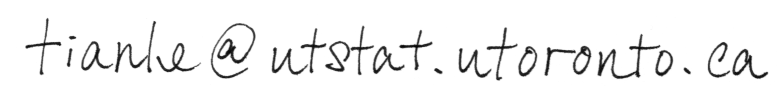

Personal.

I'm CHEN, TIANLE, a PhD student at the University of Toronto in the Department of Statistical Sciences.
My interests are in Applied Machine Learning, specifically applications in insurance and retail.
Publications.
Chen, T., Keng, B., Moreno, J. (2018)
Multivariate Arrival Times with Recurrent Neural Networks for Personalized Demand Forecasting
Published in Proceedings of IEEE International Conference on Data Mining 2018 DMS Workshop.
Check out the GitHub repository at github.com/tianle91/matrnn.
Arxiv copy here.
Badescu, A.L., Chen, T., Lin, X.S., & Tang, D. (2018)
A Marked Cox model for the Number of IBNR Claims: Estimation and Application
Submitted to ASTIN Bulletin.
Contact.
Email:

Social Media:
Tweets @tianlegit.
LinkedIn here.
Mail that's slow and prone to labor disruptions:
Tianle Chen
Department of Statistical Sciences, University of Toronto
100 St. George St. SS 6018
Toronto, Ontario M5S 3G3, Canada
Miscellaneous.
Mine Monero (for me) here.
Monero public key: 49LnijGrxTkRYovAcbVVgeDWTVcsVFCbNiwU9ejtTckWcoe24hugHzAZv4MKQvQi3UDeipS4nPEBU65G5tST1orJ1e8RwEe
Web design inspired by www.berkshirehathaway.com.